CM1 modelforms are numbered starting from 0. Siemens EDA reserves indices 0…9 for simple and widely used models with one or two terms. Modelforms at and above 100 combine Gauss-Laguerre bases with other terms.
This is the CTR model:
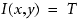
This is the diffused aerial image model:
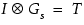
This is the diffused acid model:
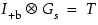
This is a double Gaussian diffusion:
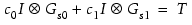
This is a complex modelform with the image intensity as the anchoring term, acid, and bases:
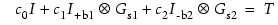
This is a complex modelform with the image intensity as the anchoring term, double Gaussian acid, and bases:
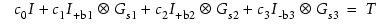
This is a modified modelform 11, but also includes the slope:
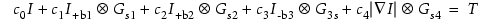
This modelform adds Imax and Imin to modelform 20:
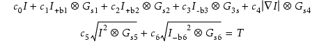
This modelform adds Laplacian to modelform 21:
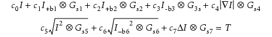
Extends modelform 22 by adding a multi-range SEM SHRINK dose.
Extends modelform 22 by adding a multi-range SEM SHRINK dose and a SEM electron absorption.
Starting from the 2018.1 release, this modelform is no longer available from the CM1 Center and Calibre nmModelflow GUI, but can be specified using various batch commands.
This modelform includes diffused acid and base plus eight basis functions:
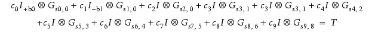
This modelform has doubled b-terms, shrink, and horizontal bias.
Extends modelform 22 by adding a sidewall bias (NTD) term.
Extends modelform 22 by adding a dual polarity shrink (NTD) parameter.
Extends modelform 22 by adding a shrink parameter.
Extends modelform 22 by adding a horizontal bias parameter.
Extends modelform 22 with both shrink and horizontal bias parameters.
Extends modelform 22 with both shrink and sidewall bias parameters.
Extends modelform 22 with both dual polarity shrink and sidewall bias parameters.
Extends modelform 22 with single polarity shrink, horizontal bias, and sidewall bias parameters.
Extends modelform 22 with doubled b-terms, dual polarity shrink, and horizontal bias.
Extends modelform 22 with fixed smoothing length, doubled b-terms, dual polarity shrink, and horizontal bias.
Extends modelform 10 with eight-fold dissolution, contour curvature, double pattern density, and triple crossterms.
Extends modelform 22 and adds sidewall bias, contour curvature, six-fold dissolution, and tuning of the acid anchor term, M0. This model is available in nmModelflow only and cannot be calibrated in modelflow_v2.
Extends modelform 48 and adds sidewall bias terms.
Extends modelform 48 and adds fixed NTD smoothing terms and sidewall bias terms.
Extends modelform 22 with eight-fold dissolution, contour curvature, double pattern density, and eight crossterms.
Extends modelform 22 with nine-fold dissolution, contour curvature, and 11 crossterms.
Extends modelform 22 with doubled b-terms, quadruple polarity shrink, dual horizontal bias, and sidewall bias.
Extends modelform 22 with fixed NTD smoothing terms, doubled b-terms, quadruple polarity shrink, dual horizontal bias, and sidewall bias.
Modelforms 88 and 89 require SHRINK_SIDO be turned on (i.e. set to 1). By default, SHRINK_SIDO is off (0).
Extends modelform 22 with doubled b-terms, quadruple polarity shrink with SHRINK_SIDO, dual horizontal bias, and sidewall bias.
Extends modelform 22 with fixed NTD smoothing terms, doubled b-terms, quadruple polarity shrink with SHRINK_SIDO, dual horizontal bias, and sidewall bias.
Extends modelform 22 with fixed NTD smoothing terms, doubled b-terms, quadruple polarity shrink, horizontal bias, sidewall bias, contour curvature, and quintuple dissolution. This model is available in Calibre nmModelflow only and cannot be calibrated in modelflow_v2.
Extends modelform 22 with fixed NTD smoothing terms, doubled b-terms, quadruple polarity shrink, horizontal bias, sidewall bias, contour curvature, quintuple dissolution, and tuning of the acid anchor term, M0. This model is available in Calibre nmModelflow only and cannot be calibrated in modelflow_v2.
Extends modelform 22 with fixed NTD smoothing terms, doubled b-terms, quadruple polarity shrink, horizontal bias, sidewall bias, contour curvature, quintuple dissolution, pattern density, and 11 crossterms. This model is available in Calibre nmModelflow only and cannot be calibrated in modelflow_v2.
Starting from the 2018.1 release, this modelform is no longer available from the CM1 Center and Calibre nmModelflow GUI, but can be specified using various batch commands.
Extends modelform 22 with “black box” modelform 12 orthogonal bases:
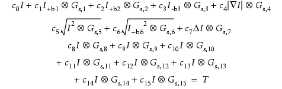
Starting from the 2018.1 release, this modelform is no longer available from the CM1 Center and Calibre nmModelflow GUI, but can be specified using various batch commands.
Extends modelform 120 by adding shrink and horizontal bias.
Supports FRM kernels. This model is available in Calibre nmModelflow only and cannot be calibrated in modelflow_v2.